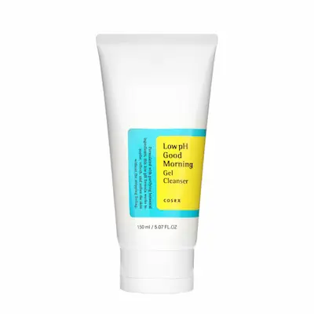
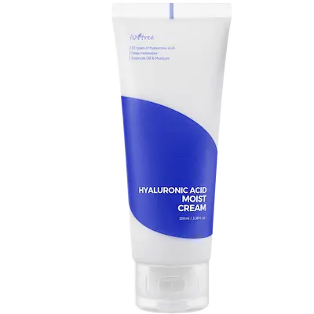
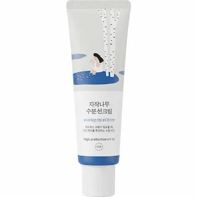

Celimax The Vita A Retinol Shot Tightening Serum — сыворотка с ретинолом для ухода за текстурой и упругостью кожи
Корейская сыворотка для тех, кто хочет познакомиться с уходом на основе ретинола. Разбираем формулу с 0,1% чистого ретинола, комплексом из 9 пептидов и 1% пантенола, особенности ключевых компонентов и их роль в косметическом уходе.
Почему этот продукт заслуживает внимания?
Celimax The Vita A Retinol Shot Tightening Serum — корейская сыворотка для тех, кто интересуется уходом с ретинолом и хочет уделить внимание внешнему виду, текстуре и упругости кожи. Её формула сочетает 0,1% чистого ретинола, комплекс из 9 пептидов и 1% пантенола. Такое сочетание активного компонента и дополнительных ингредиентов делает средство интересным вариантом для знакомства с ретиноловым уходом при условии постепенного введения в повседневную рутину.
В центре формулы — ретинол, форма витамина A, широко используемая в косметике для ухода за возрастными изменениями и неровной текстурой кожи. Его дополняет комплекс из 9 пептидов, который производитель включил в формулу для ухода за упругостью кожи. Пантенол в концентрации 1% помогает поддерживать комфорт кожи. Благодаря сочетанию этих компонентов сыворотка ориентирована на комплексный уход, а не только на использование одного активного ингредиента.
Отдельного внимания заслуживает концентрация ретинола — 0,1%. Даже если вы уже знакомы с активными косметическими средствами, важно учитывать индивидуальную реакцию кожи и не торопиться с частотой применения. Производитель рекомендует новичкам начинать с небольшого количества средства через вечер, постепенно адаптируя кожу к ретинолу. В этом обзоре разберём состав Celimax The Vita A Retinol Shot Tightening Serum, роль ключевых компонентов, особенности применения и меры предосторожности, а также выясним, кому может подойти такая сыворотка.
Текстура и первое использование
Celimax The Vita A Retinol Shot Tightening Serum — сыворотка для ухода за кожей с ретинолом, которая привлекает внимание сочетанием активных компонентов: 0,1% чистого ретинола, комплекса из 9 пептидов и 1% пантенола. В отличие от привычных увлажняющих средств, формулы с ретинолом требуют более внимательного подхода к использованию. Поэтому знакомство с сывороткой лучше начинать постепенно, особенно если раньше в вашем уходе не было средств с этим компонентом.
Особенность ретиноловой косметики заключается не только в составе, но и в необходимости учитывать реакцию кожи. На первых этапах применения могут возникать сухость, покраснение, шелушение или ощущение повышенной чувствительности. Это не обязательная реакция и не признак того, что средство работает эффективнее. Пантенол в концентрации 1% дополняет формулу компонентом, который помогает поддерживать комфорт кожи, а комплекс из 9 пептидов ориентирован на уход за её упругостью.
Celimax The Vita A Retinol Shot Tightening Serum может заинтересовать тех, кто хочет включить ретинол в уход и уделить внимание текстуре и внешнему виду кожи. Однако важно учитывать индивидуальную переносимость: даже концентрация 0,1% может оказаться ощутимой для неподготовленной или чувствительной кожи. Перед первым применением рекомендуется провести тест на небольшом участке кожи. Не наноси сыворотку на повреждённую, раздражённую или воспалённую кожу, а также избегай области вокруг глаз и губ.
Производитель рекомендует новичкам начинать с небольшого количества средства через вечер в течение первых двух недель. Наноси сыворотку на очищенную сухую кожу, затем используй увлажняющий крем. Если кожа хорошо переносит средство, частоту применения можно постепенно увеличивать в соответствии с рекомендациями производителя. Не стоит сразу сочетать ретинол с большим количеством других активных компонентов. Утром обязательно используй солнцезащитное средство. Если появляется выраженное раздражение или сильный дискомфорт, сократи частоту применения или прекрати использование.
Важно помнить: более частое нанесение и заметное ощущение на коже не означают более выраженного результата. В уходе с ретинолом особенно важны постепенность, регулярность и внимательное отношение к реакции кожи. Поэтому начинай с минимального количества средства, не забывай об увлажнении и ежедневно используй солнцезащиту.


С какими средствами сочетать Celimax The Vita A Retinol Shot Tightening Serum?
Celimax The Vita A Retinol Shot Tightening Serum можно включить в систему ухода, ориентированную на улучшение внешнего вида и текстуры кожи. Поскольку сыворотка содержит 0,1% чистого ретинола, важно не перегружать рутину большим количеством активных компонентов. Лучше сделать ставку на деликатное очищение, базовое увлажнение, крем для поддержания защитного барьера и ежедневную солнцезащиту. На этапе знакомства с ретинолом особенно важно соблюдать постепенность и внимательно следить за реакцией кожи.
1. Очищение — Etude SoonJung pH 6.5 Whip Cleanser
Для начала ухода можно выбрать Etude SoonJung pH 6.5 Whip Cleanser — мягкое очищающее средство с воздушной пеной. Оно поможет удалить загрязнения и подготовить кожу к последующим этапам. Особенно важно, чтобы очищение не оставляло неприятного ощущения сухости и стянутости: после умывания кожа должна чувствовать себя комфортно. Перед нанесением ретиноловой сыворотки дай коже полностью высохнуть.
2. Основной этап — Celimax The Vita A Retinol Shot Tightening Serum
Это центральный продукт нашей подборки. Формула с 0,1% чистого ретинола, комплексом из 9 пептидов и 1% пантенола предназначена для ухода за текстурой и упругостью кожи. Наноси небольшое количество сыворотки на чистую сухую кожу, избегая области вокруг глаз, губ и крыльев носа. Если ты только начинаешь использовать ретинол, производитель рекомендует применять средство через вечер в течение первых двух недель. Не сочетай его в один вечер с большим количеством других потенциально раздражающих активов и ориентируйся на индивидуальную переносимость.
3. Увлажнение — Torriden DIVE-IN Low Molecule Hyaluronic Acid Toner
В качестве дополнительного увлажняющего этапа можно рассмотреть Torriden DIVE-IN Low Molecule Hyaluronic Acid Toner. Тонер с гиалуроновой кислотой поможет дополнить повседневный уход и поддержать ощущение увлажнённости кожи. Однако при использовании ретинола важно учитывать индивидуальную реакцию: если кожа становится чувствительной, временно упрости рутину и оставь только базовые средства, которые не вызывают дискомфорта.
4. Увлажняющий крем — Illiyoon Ceramide Ato Concentrate Cream
Для завершения вечернего ухода можно выбрать Illiyoon Ceramide Ato Concentrate Cream. Крем с церамидами поможет дополнить рутину средствами для поддержания защитного барьера кожи и уменьшить ощущение сухости. Наноси его после сыворотки, когда она впитается. Если кожа склонна к сухости или чувствительности, комфортный увлажняющий крем особенно важен при постепенном введении ретинола.
5. Солнцезащита — SKIN1004 Madagascar Centella Hyalu-Cica Water-Fit Sun Serum SPF50+ PA++++
Утром обязательно заверши уход солнцезащитным средством. SKIN1004 Madagascar Centella Hyalu-Cica Water-Fit Sun Serum SPF50+ PA++++ — лёгкий формат SPF, который удобно включить в ежедневную рутину. Средство обеспечивает защиту от UVA- и UVB-излучения при правильном нанесении. Используй достаточное количество и обновляй защиту согласно инструкции, особенно при длительном пребывании на улице. Солнцезащита особенно важна при использовании косметики с ретинолом.
Как выстроить уход?
Утром: Etude SoonJung pH 6.5 Whip Cleanser → Torriden DIVE-IN Hyaluronic Acid Toner при необходимости → Illiyoon Ceramide Ato Concentrate Cream при необходимости → SKIN1004 Hyalu-Cica Water-Fit Sun Serum SPF50+ PA++++.
Вечером в дни использования ретинола: Etude SoonJung pH 6.5 Whip Cleanser → полностью высушить кожу → Celimax The Vita A Retinol Shot Tightening Serum → Illiyoon Ceramide Ato Concentrate Cream. Увлажняющий тонер можно использовать только в том случае, если кожа хорошо переносит такую комбинацию.
Вечером в дни отдыха от ретинола: Etude SoonJung pH 6.5 Whip Cleanser → Torriden DIVE-IN Hyaluronic Acid Toner → Illiyoon Ceramide Ato Concentrate Cream. В такие дни сосредоточься на увлажнении и поддержании комфорта кожи.
Необязательно покупать и использовать все средства сразу. Для начала достаточно мягкого очищения, ретиноловой сыворотки и подходящего увлажняющего крема. На этапе адаптации не стоит добавлять в тот же вечер интенсивные кислоты, скрабы и другие потенциально раздражающие средства. Вводи продукты постепенно и наблюдай за реакцией кожи. Если появляются выраженное раздражение, сильное жжение или стойкое покраснение, сократи частоту применения либо прекрати использование сыворотки. Утром обязательно используй солнцезащиту.
Подборка средств от Beauty Panda
Редакционная подборка Estetica Lens.
Подобрали корейские средства, которые могут дополнить уход с
Celimax The Vita A Retinol Shot Tightening Serum: мягкое очищение,
интенсивное увлажнение, питание и поддержание защитного барьера
сухой кожи, а также ежедневная солнцезащита.
Наличие и актуальные условия покупки можно уточнить
непосредственно у
BeautyPanda.

COSRX Low pH Good Morning Gel Cleanser
Деликатное очищение
Очищающий гель с низким pH для ежедневного ухода. Помогает удалить загрязнения, не превращая очищение в лишнюю нагрузку для кожи, которая склонна к сухости.
Celimax The Vita A Retinol Shot Tightening Serum
Главный продукт обзора
Сыворотка с 0,1% чистого ретинола, комплексом из 9 пептидов и 1% пантенола для ухода за текстурой, упругостью и внешним видом кожи.

COSRX Advanced Snail 96 Mucin Power Essence
Увлажнение и смягчение
Эссенция с фильтратом секрета улитки для дополнительного увлажнения и смягчения кожи. Может стать комфортным этапом ухода в дни без ретинола.

Isntree Hyaluronic Acid Moist Cream
Комфорт сухой кожи
Увлажняющий крем с гиалуроновой кислотой для смягчения кожи и уменьшения ощущения стянутости. Подходит для завершающего этапа ухода, когда коже не хватает влаги.

Round Lab Birch Juice Moisturizing Sunscreen
Ежедневная защита от солнца
Увлажняющее солнцезащитное средство SPF50+ PA++++ для завершающего этапа утреннего ухода. Особенно актуально использовать защиту от UVA- и UVB-излучения при уходе с ретинолом.
Разбор состава Celimax The Vita A Retinol Shot Tightening Serum
Главная особенность Celimax The Vita A Retinol Shot Tightening Serum — сочетание 0,1% чистого ретинола, комплекса из 9 пептидов и 1% пантенола. Производитель разработал формулу с акцентом на уход за текстурой кожи, её упругостью и видимыми возрастными изменениями. При этом средство интересно не только ретинолом: дополнительные ухаживающие компоненты помогают сделать формулу более комплексной.
Ретинол относится к производным витамина A и широко используется в косметике для ухода за кожей с неровной текстурой и видимыми морщинами. Однако это активный ингредиент, который требует постепенного введения в уход. Особенно внимательно к нему стоит относиться обладателям сухой и чувствительной кожи: важно учитывать не только заявленную концентрацию ретинола, но и состояние защитного барьера, регулярность применения и сочетание с другими средствами. Разберём основные компоненты формулы и их роль.
1. Retinol 0.1% — чистый ретинол для ухода за кожей
Центральный компонент сыворотки — 0,1% чистого ретинола. Это форма витамина A, которую применяют в косметике для ухода за внешними признаками возрастных изменений, неровной текстурой и менее гладким видом кожи. Ретинол участвует в процессах обновления эпидермиса и при регулярном использовании может способствовать улучшению внешнего вида кожи.
Почему это важно: концентрация 0,1% делает средство интересным для тех, кто хочет познакомиться с ретинолом или добавить его в антивозрастной уход. Однако даже относительно небольшая концентрация не гарантирует отсутствия раздражения. В начале применения возможны сухость, шелушение, покраснение и ощущение стянутости. Поэтому средство необходимо вводить постепенно, ориентируясь на реакцию кожи.
2. 9-Peptide Complex — комплекс из девяти пептидов
Ещё одна особенность формулы — комплекс из 9 пептидов. Пептиды представляют собой короткие цепочки аминокислот, которые используются в косметике в качестве ухаживающих компонентов. Их включают в формулы, ориентированные на поддержание более гладкого и упругого внешнего вида кожи.
Почему это важно: пептидный комплекс дополняет ретинол и делает формулу более многокомпонентной. Он соответствует общей концепции сыворотки, направленной на уход за внешними признаками возрастных изменений. При этом само наличие девяти пептидов не означает, что каждый из них присутствует в высокой концентрации или обеспечивает отдельный гарантированный эффект.
3. Panthenol 1% — пантенол для комфорта кожи
Пантенол, также известный как провитамин B5, — популярный ухаживающий ингредиент, который используют в косметике для поддержания увлажнённости и комфорта кожи. В формуле Celimax производитель указывает его концентрацию на уровне 1%. Пантенол помогает смягчать ощущение сухости и поддерживать защитный барьер кожи.
Почему это важно: при использовании ретинола кожа может становиться более сухой и чувствительной. Поэтому наличие пантенола особенно интересно в формуле, рассчитанной на уход с витамином A. Однако он не исключает возможного раздражения и не заменяет полноценный увлажняющий крем, особенно если кожа изначально склонна к сухости.
4. Увлажняющие компоненты — поддержка водного баланса кожи
Помимо основных компонентов, в косметических формулах обычно используются увлажнители, которые помогают удерживать воду в поверхностных слоях кожи. К ним могут относиться Glycerin, Butylene Glycol, Propanediol и другие вещества, если они присутствуют в INCI конкретной версии продукта.
Почему это важно: увлажняющая составляющая особенно актуальна для сухой кожи, которая может сильнее реагировать на введение ретинола. Такие компоненты помогают поддерживать более комфортное ощущение после нанесения. Точный перечень увлажнителей и их положение в составе следует проверять по INCI на упаковке.
5. Смягчающие компоненты — комфорт и текстура средства
В сыворотках с ретинолом важны не только активные вещества, но и основа формулы. Смягчающие компоненты, или эмоленты, помогают улучшить распределение продукта, влияют на его текстуру и ощущения после нанесения. В зависимости от конкретной формулы к ним могут относиться различные липидные ингредиенты, силиконы и другие смягчающие вещества.
Почему это важно: для сухой кожи комфорт текстуры имеет особое значение. Если после сыворотки появляется ощущение стянутости, можно дополнить вечерний уход более насыщенным кремом. При этом не стоит считать, что смягчающая основа полностью предотвращает сухость или раздражение, связанные с использованием ретинола.
6. Компоненты для поддержания защитного барьера
Защитный барьер кожи помогает удерживать влагу и снижает воздействие внешних раздражителей. В косметике для его поддержания используют разные группы ингредиентов: липиды, увлажнители и смягчающие вещества. Их конкретный перечень зависит от состава готового продукта.
Почему это важно: при введении ретинола особенно важно не перегружать уход дополнительными активами и не забывать о восстановлении комфорта кожи. Для сухой кожи полезно сочетать сыворотку с подходящим кремом, а при появлении выраженного раздражения временно прекратить применение ретинола до восстановления кожи.
7. Ретинол и пептиды — сочетание для комплексного ухода
В Celimax The Vita A Retinol Shot Tightening Serum производитель объединил ретинол и пептидный комплекс. Это сочетание интересно тем, что в одной формуле присутствуют два популярных направления современного косметического ухода: производное витамина A и пептиды.
Почему это важно: формула ориентирована на комплексный уход за внешними признаками возрастных изменений, текстурой и упругостью кожи. Однако не стоит воспринимать сочетание компонентов как гарантию определённого результата. Эффект зависит от регулярности применения, индивидуальной переносимости и общего состояния кожи.
8. Вспомогательные компоненты, стабилизаторы и консерванты
Как и любое готовое косметическое средство, сыворотка содержит не только ингредиенты, которые производитель выделяет в описании. В формуле могут присутствовать компоненты, отвечающие за консистенцию, стабильность, распределение средства и защиту от микробного загрязнения. Их конкретный перечень следует проверять по полному списку INCI на упаковке.
Почему это важно: вспомогательные ингредиенты тоже влияют на свойства готового продукта. При чувствительной коже стоит изучать полный состав, а не ориентироваться только на концентрацию ретинола и количество пептидов. Индивидуальная реакция возможна даже на средства с большим количеством ухаживающих компонентов.
Итог: чем интересен состав Celimax The Vita A Retinol Shot?
Celimax The Vita A Retinol Shot Tightening Serum привлекает сочетанием 0,1% чистого ретинола, комплекса из 9 пептидов и 1% пантенола. Основной акцент формулы сделан на уходе за текстурой кожи, её упругостью и видимыми возрастными изменениями. Пантенол дополняет состав ухаживающим компонентом, который помогает поддерживать увлажнённость и комфорт кожи.
Для сухой кожи особенно важно правильно организовать применение. Не стоит начинать с ежедневного использования: производитель рекомендует новичкам наносить средство через вечер в течение первых двух недель, используя небольшое количество. После очищения нанеси сыворотку и дополни уход увлажняющим кремом. Если кожа реагирует сухостью или раздражением, сократи количество средства или частоту применения.
Ретинол лучше использовать вечером. На следующий день необходимо наносить солнцезащитное средство широкого спектра действия. В период адаптации желательно не сочетать сыворотку в один вечер с агрессивными кислотными средствами, скрабами и другими потенциально раздражающими активами. Если кожа очень сухая, чувствительная или уже раздражена, сначала стоит восстановить её комфорт и только затем рассматривать введение ретинола.
Важно учитывать, что концентрации 0,1% ретинола и 1% пантенола, а также наличие комплекса из 9 пептидов указаны производителем. Полный состав и порядок ингредиентов необходимо сверять с INCI на упаковке конкретной версии продукта. Наличие ухаживающих компонентов не исключает индивидуальной реакции на ретинол.
Где найти?
Celimax The Vita A Retinol Shot Tightening Serum представлена у BeautyPanda. Уточнить актуальное наличие и стоимость можно непосредственно у продавца.
Магазины Beauty Panda в Молдове:
📍 Сорока
str. Grigore Vieru 9B, Soroca, Moldova, MD-3001
📍 Дрокия
str. 31 August 20/C, Drochia, Moldova
*Наличие, стоимость и условия покупки рекомендуется уточнять у продавца перед визитом. Ссылка ведёт на страницу продавца в Instagram.
Часто задаваемые вопросы
Можно ли использовать Celimax The Vita A Retinol Shot Tightening Serum каждый день?
Если вы только начинаете знакомство с ретинолом, не стоит сразу использовать сыворотку ежедневно. Производитель рекомендует в течение первых двух недель наносить средство через вечер, используя небольшое количество. Если кожа хорошо переносит формулу, частоту можно постепенно увеличивать. При появлении выраженной сухости, шелушения или раздражения сократите частоту применения или сделайте перерыв.
Для какого типа кожи подходит эта сыворотка?
Celimax The Vita A Retinol Shot Tightening Serum может заинтересовать тех, кто хочет включить ретинол в уход за кожей с неровной текстурой и видимыми возрастными изменениями. Средство может использоваться при разных типах кожи, однако переносимость ретинола индивидуальна. Сухой коже особенно важно дополнить уход увлажняющим и питательным кремом, а чувствительной — вводить сыворотку особенно осторожно. Если кожа уже раздражена или повреждена, отложите применение до восстановления.
Подойдёт ли Celimax Retinol Shot для сухой кожи?
Да, сухая кожа не является автоматическим противопоказанием к использованию ретинола, но требует более внимательного подхода. В формуле Celimax присутствует 1% пантенола, который помогает поддерживать увлажнённость и комфорт кожи. Тем не менее ретинол может вызывать сухость и шелушение, особенно в начале применения. Начинайте с небольшого количества, используйте сыворотку через вечер и обязательно дополняйте её питательным кремом.
Что означает 0,1% Retinol в составе сыворотки?
Это заявленная производителем концентрация чистого ретинола в формуле. Ретинол относится к производным витамина A и широко используется в косметике для ухода за текстурой кожи и видимыми признаками возрастных изменений. Концентрация 0,1% не означает, что средство обязательно будет переноситься всеми одинаково: даже при такой концентрации возможны сухость, покраснение и шелушение.
Для чего в формуле нужны 9 пептидов и пантенол?
Комплекс из 9 пептидов дополняет концепцию ухода за внешними признаками возрастных изменений и упругостью кожи. Пантенол в концентрации 1% выступает ухаживающим компонентом, который помогает поддерживать увлажнённость и комфорт. Эти ингредиенты делают формулу более комплексной, однако не гарантируют отсутствия раздражения, которое иногда сопровождает применение ретинола.
Как правильно наносить Celimax Retinol Shot?
Используйте сыворотку вечером после очищения кожи. Нанесите небольшое количество на сухую кожу лица, избегая области вокруг глаз, губ и участков с повреждениями. После этого продолжите уход увлажняющим или питательным кремом. В первые две недели производитель рекомендует новичкам применять средство через вечер. Утром обязательно используйте солнцезащитное средство широкого спектра действия с SPF 30 или выше, а лучше SPF 50. Также следуйте инструкции на упаковке.
Можно ли сочетать сыворотку с кислотами и другими активами?
На начальном этапе лучше не сочетать ретинол в одной вечерней рутине с кислотными эксфолиантами, сильными отшелушивающими средствами и другими потенциально раздражающими активами. Такое сочетание может повысить риск сухости и раздражения. Если вы используете кислоты или другие активные средства, разумнее распределить их по разным дням и сначала оценить переносимость ретинола отдельно.
Можно ли использовать Celimax Retinol Shot вместе с сывороткой и кремом?
Да. После очищения и нанесения ретиноловой сыворотки можно использовать увлажняющий крем. Для сухой кожи особенно актуальны средства с пантенолом, церамидами и другими увлажняющими и смягчающими компонентами. Если кожа чувствительная или только привыкает к ретинолу, лучше не перегружать вечерний уход дополнительными активами. Новые продукты вводите постепенно, чтобы легче было определить причину возможной реакции.
Можно ли использовать ретинол при чувствительной коже?
Чувствительная кожа может реагировать на ретинол сухостью, покраснением, шелушением или жжением. Поэтому перед полноценным применением стоит провести тест на небольшом участке кожи и внимательно оценить реакцию. Начинайте с минимального количества и редкой частоты. Если кожа склонна к выраженным реакциям, имеет повреждения или уже раздражена, лучше проконсультироваться с дерматологом перед введением ретинола.
Что делать, если после нанесения появляются сухость, жжение или покраснение?
Если после применения возникает выраженное жжение, сильное покраснение, зуд или заметное шелушение, прекратите использование сыворотки. Сосредоточьтесь на мягком очищении и базовом увлажняющем уходе, временно исключив другие активные компоненты. Не наносите ретинол повторно, пока кожа не восстановится. Если реакция сильная, сохраняется или усиливается, обратитесь к дерматологу.
Нужно ли использовать SPF при применении ретинола?
Да. При использовании ретинола особенно важно ежедневно защищать кожу от ультрафиолетового излучения. Утром наносите солнцезащитное средство широкого спектра действия с SPF 30 или выше, предпочтительно SPF 50, и обновляйте его в соответствии с инструкцией. Не забывайте о дополнительной защите при длительном пребывании на солнце.
Когда можно ожидать первые результаты от ретинола?
Результаты применения ретинола не появляются мгновенно. Оценка изменений текстуры кожи и внешнего вида морщин требует регулярного использования в течение продолжительного времени. Скорость и выраженность результата зависят от исходного состояния кожи, регулярности применения и индивидуальной переносимости. Не увеличивайте частоту использования ради ускорения эффекта: постепенное введение и комфорт кожи важнее интенсивности ухода.
Можно ли использовать ретинол летом?
Сам по себе сезон не является единственным критерием для применения ретинола. Важно соблюдать регулярную солнцезащиту, избегать чрезмерного пребывания на солнце и внимательно следить за состоянием кожи. Если вы не можете обеспечить надёжную защиту от ультрафиолета или кожа раздражена после солнечного воздействия, лучше отложить применение.